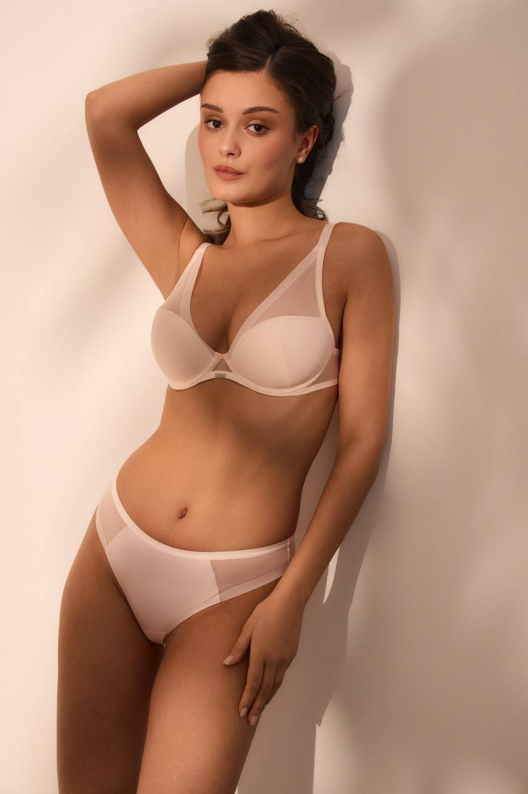

Обхват под грудью
Лента идет строго горизонтально под грудью. Держите ее плотно, но без врезания в тело. Это база для пояса.
Размеры и посадка
Размер на бирке - это только начало. Хорошая посадка складывается из пояса, чашки, косточек, бретелей и того, как белье ощущается в движении.
Шаг 1
Лента идет строго горизонтально под грудью. Держите ее плотно, но без врезания в тело. Это база для пояса.
Измерьте по самым выступающим точкам. Лучше делать это в мягком белье без push-up или без белья, если так комфортно.
Если мерки разные в течение цикла или после смены веса, ориентируйтесь на актуальные ощущения и примерку.
Шаг 2
Калькулятор дает стартовые ориентиры в EU и UK по двум сантиметровым меркам. У разных брендов посадка отличается, поэтому результат лучше воспринимать как первую точку примерки.
Fit check
Не поднимается на спине и дает основную поддержку. На новом бюстгальтере комфортно застегивать его на самый свободный крючок.
Нет пустоты, заломов и выпирания сверху или сбоку. Край чашки мягко переходит к телу.
Она окружает грудь по основанию и не лежит на ткани груди, под мышкой или у центра.
Перемычка между чашками спокойно касается тела. Если она отходит вперед, часто чашка мала или форма не ваша.
Они не впиваются в плечи и не спадают каждые несколько минут. Основная поддержка идет от пояса.

Если что-то не так
Подбор
Напишите нам в WhatsApp. Мы подскажем, с каких размеров начать примерку, и проверим посадку в шоуруме.
Записаться в WhatsApp